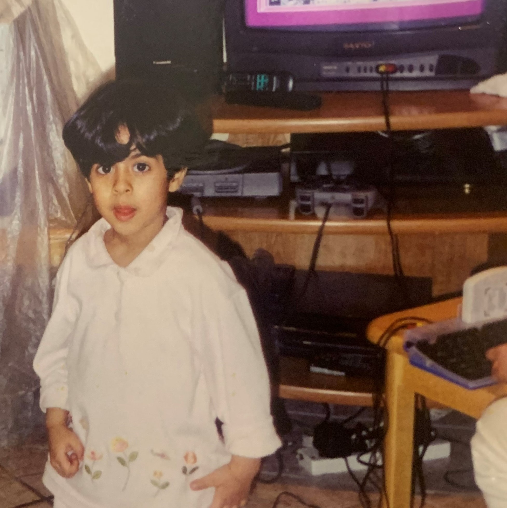
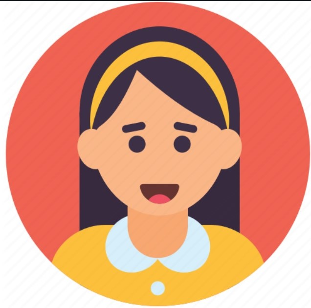
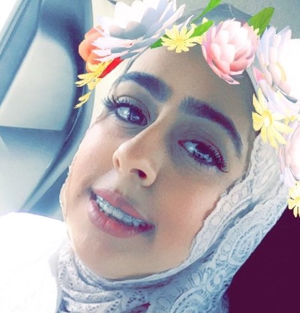
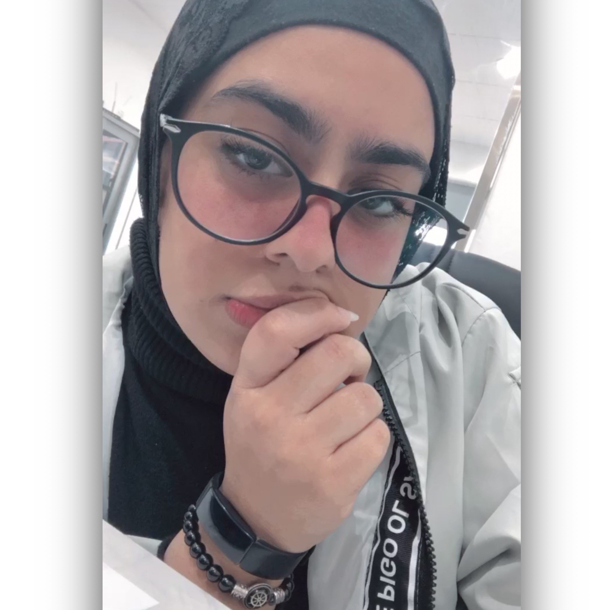

About
Fatima Majed ALTameemii
-

1998-2007
Fatima's childhood
My childhood was like childhood of boys, I never tried to play Barbie or dolls, as all my toys are cars, swords and weapons 🚗🔫🏹.
-

2008-2016
Fatima's teenager
My adolescence was very fun and calm, as I was a fan of a celebrity and remembering this is ashamed me now🙈 , then i have finished my high school degree 😎.
-

2016-2020
Fatima in the university
I started studying at the AOU with a bachelor’s degree majoring in IT, I graduated from it last summer, and i was nicknamed the graduate of Coronavirus🧬.
-

From Sep2020-now
The Employee Fatima
Finally, I got hired in my brother's company as an administrator and information technologist 🧠.
-

Jan 2021-Now
Fatima big Steps
One of the most beautiful and biggest steps in my life is to participate in the Full Stack bootcamp in Coded💙
-
Wish me
a good
luck💜